Material 表現 sample#
もう少し凝った表現がしたい時の例をMaterial for MkDocs - Reference より抜粋。
文字#
絵文字#
:material-download:- Icons, Emojisから使用できる絵文字を確認
キーボード#
Ctrl+Alt+Del
++ctrl+alt+del++
- キーマップはここで確認。
- 小文字で記述するため、うっかり大文字で記述しないこと。
文字装飾#
| 説明&表示例 | 記法 |
|---|---|
| 追加 | 追加 |
| 削除 | 削除 |
|
ハイライトテキスト#
脚注#
Admonitions#
- Admonitions（警告）の表現方法は
!!! 文字列と記述することで文章を目立たせる表現になる。
Inline blocks#
以下のように記述することで左寄せ、右寄で記述可能だが、レイアウトが難しくなるため使用しない方が無難
!!! info inline
`inline`を指定すると左よりで表示
`inline end`を指定すると右よりで表示
!!! info inline end
`inline`を指定すると左よりで表示
`inline end`を指定すると右よりで表示
Changing the title#
タイトルを変更します
!!! "タイトルを変更します"のように記述します。
Removing the title#
!!! note ""のように記述することでタイトルを削除します。
Adding the title#
タイトル追加
!!! note "タイトルの追加"のように記述することでタイトルを削除します。
Collapsible blocks#
Note
??? note のように記述することで折り畳み（デフォルト close）で表示されます。
Note
???+ note のように記述することで折り畳み（デフォルト open）で表示されます。
Type#
Note
Noteを指定します。
Abstract
abstract, summary, tldrを指定します。
Info
info, todo を指定します。
Tip
tip, hint, important を指定します。
Success
success, check, done を指定します。
Warning
warning, caution, attention を指定します。
Failure
failure, fail, missing を指定します。
Danger
danger, error を指定します。
Bug
Bug を指定します。
Question
Question を指定します。
Example
example を指定します。
Quote
quote, cite を指定します。
code block#
Adding a title#
- コードブロックにタイトルを追加するには以下のように記述。
title="bubble_sort.py"- コードハイライト＋タイトルは以下のように記述。
py title="bubble_sort.py"
def bubble_sort(items):
for i in range(len(items)):
for j in range(len(items) - 1 - i):
if items[j] > items[j + 1]:
items[j], items[j + 1] = items[j + 1], items[j]
Highlighting specific lines#
- code block にハイライトを追加するには以下のように記述。
hl_lines="2 3"
def bubble_sort(items):
for i in range(len(items)):
for j in range(len(items) - 1 - i):
if items[j] > items[j + 1]:
items[j], items[j + 1] = items[j + 1], items[j]
Adding line numbers#
linenums="1"を記載
Content tabs#
Grouping code blocks#
- 複数のコードブロックを表現するには以下のように記述します。
=== "タイトル名"
- 以下のように画像でも可能


Mermaid#
コードブロックに mermaidと記述
ボタン#
Info
以下コードの(#)にリンクを貼れる。
primary color#
[Subscribe to our newsletter](#){ .md-button .md-button--primary }
secondary color#
[Subscribe to our newsletter](#){ .md-button }
icon button#
[Send :fontawesome-solid-paper-plane:](#){ .md-button }
link button#
[参考サイト :octicons-link-16:](https://squidfunk.github.io/mkdocs-material/reference/buttons/#adding-primary-buttons){ .md-button }
download button#
[Download :material-download:](./test.zip){ .md-button }